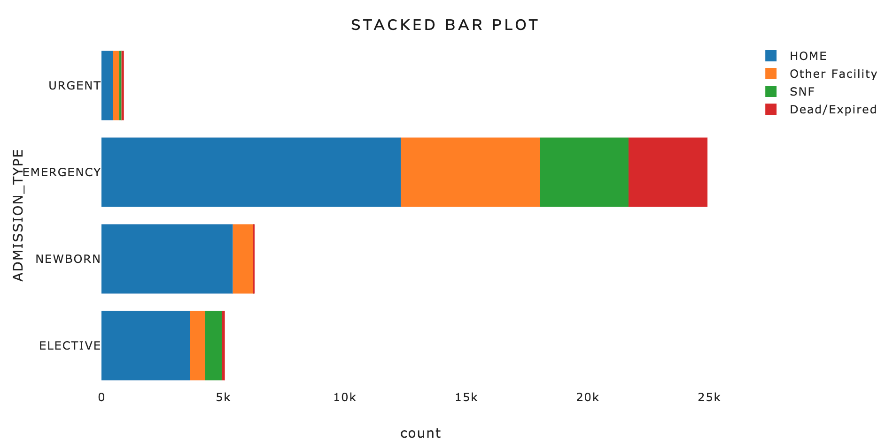

Project Overview
The utilization of hospital resources is an urgent topic worldwide. Often we could hear in the news, especially in times of the global pandemic, of the space shortage in hospitals for patients in need. The main goal of this project is to construct a classification system built with state-of-art machine learning models to predict the discharge location of patients with ICU admission based on a series of records, such as demographics, vital signs, laboratory tests, medications information, and so on.
The major focus of our prediction will be on SNF which stands for skilled nursing facilities and other hospitals, Since the number of patients assigned to these facilities best represents the allocation of medical resources and hospital capacity.
My Responsibility
- Initial operations on accessing the data & Data imputation on missing values.
- Implemented Random Forest modeling with a series of hyperparameter tuning for optimal performance.
- Designed workflow and layout of interactive ML real-time prediction using Flask app.
- Finished the real-time prediction engine using machine learning models.
- Data product & Github aggregation and calibration; Gthub readme organizations & updates (cooperated with all team members).
Audience
Our platform aims to serve the hospital administration team, the inquisitive researchers and curious patients. The multi-page dashboard serves as a tool to monitor occupancy and clinical results of patients, and provide comprehensive demonstration. The online ML prediction model provides real-time results of clinical outcome, which will aid in decision-making process of patients and doctors.
Goals
Our project will be able to demonstrate the hospital bed occupancy and the usage of hospital resources so that the doctors are able to make better decisions. Moreover, it will display vivid visualizations of the overall trend of the patients in hospital. And our platform will help not only the doctors by the patients and inquisitive people by offering an online machine learning platform.
Data
MIMIC data is a public-available database which is comprised of ~60,000 deidentified large-scale health-related data.
Data Preprocessing
Data pre-processing was conducted using multiple packages in Python, including pandas and numpy. Subsequent tasks include looking at the distribution of each varaible, converting to appropriate datatype，then checking for the missingness of the data and conducted imputation and testing performance on dummy model.
Technical Stack I mastered
Data processing: pandas, numpy / Visualization: pyplot, seaborn
Machine Learning Implementation: scikit-learn, optuna, xgboost
Deployment: dash, Flask
Git version control: branch set-up, push, commit, merge, pull, resolve issues
Dashboard EDA
First, we looked at the distribution of the MIMIC dataset. The majority of patients were discharged to their own home(58.7%), and the second-biggest location is SNF(19.9%), and the rest were sent to other facility or dead. The number of records placed on the right is a number-based illustration of this distribution. Secondly, this stacked bar chart demonstrated the admission type of patients. The majority of admitted patients were in the emergency category, newborn and elective comes second and urgent cases are the least. This indicates the classification results in the dataset was not balanced, which we will address in the modeling process for better performance. 
We also plotted the confusin matrix to show the correlation of this dataset. Overall, there was not much collinearity issue in this dataset.
Model Analysis
We utilized multiple machine learning algorithms to approach this classfication problem. Based on our research, the currently most popular methods include Random Forest, Xgboost, SVM and Naive Bayes. After conducting data preprocessing and dummy model as a baseline comparison, we developed the each of the models with hyper-parameter tuning for model training, and based on a series of metrics such as accuracy, precision, recall and F1, selected the optimal model for future analysis.
random_grid = {'n_estimators': n_estimators,
'max_features': max_features,
'max_depth': max_depth,
'min_samples_split': min_samples_split,
'min_samples_leaf': min_samples_leaf,
'bootstrap': bootstrap}
# Use the random grid to search for best hyperparameters
rf = RandomForestClassifier()
# Random search of parameters, using 3 fold cross validation, search across 100 different combinations, and use all available cores
rf_random = RandomizedSearchCV(estimator = rf, param_distributions = random_grid, n_iter = 100, cv = 3, verbose=2, random_state=42, n_jobs = -1)
# Fit the random search model
rf_random.fit(X_train, y_train)
Random Forest Modeling
With regards to model development process, I built the Random Forest model, which is an ensemble learning method. It is trained on different parts of the data, and builds multiple decision trees during the training process then return the prediction by finding the most votes from individual trees. The major advantages of Random Forests is that it helps with our goal of boosting model performance and solving overfitting issues, but these advantages may come at the expense of some loss of interpretability.
For thr hyperparameter tuning process, I initially generated a grid of possible parameters including “n_estimators”, “min_samples_split”, “min_samples_leaf”, “max_features”, “max_depth”, and “bootstrap” for the model to choose from.
#parameters of the best model
rf_random.best_params_
{'n_estimators': 1100,
'min_samples_split': 10,
'min_samples_leaf': 2,
'max_features': 'sqrt',
'max_depth': 50,
'bootstrap': False}
With the help of RandomizedSearchCV function, performed gird search to find the set of parameters that returns highest accuracy values. After completing the tuning process, the best parameters are shown above.
Random has proved to be a very powerful model for classfication problems. The accuracy has boosted to 0.99 on train data and reached 0.68 on test data. The metrics were also satisfying for precision, recall and F1, indicating it performed well on four categories as well.
| Table 1 - Model evaluations on train dataset |
|---|
| Train | Dummy Classifier | Logistic Regression | SVM | KNN | Random Forest | Xgboost |
|---|---|---|---|---|---|---|
| Accuracy | 0.59 | 0.65 | 0.70 | 0.64 | 0.99 | 0.77 |
| Precision | 0.34 | 0.64 | 0.68 | 0.59 | 0.99 | 0.76 |
| Recall | 0.59 | 0.65 | 0.70 | 0.64 | 0.99 | 0.77 |
| F1 | 0.43 | 0.60 | 0.66 | 0.59 | 0.99 | 0.75 |
The above table shows all of modeling results. All models performed quite well after cross-validation and tuning process, with an accuracy above 64% for all models except dummy model. Random Forest ranks top in terms of performance on train data. It has almost perfect results in terms of classification.
| Table 2 - Model evaluations on test dataset |
|---|
| Test | Dummy Classifier | Logistic Regression | SVM | KNN | Random Forest | Xgboost |
|---|---|---|---|---|---|---|
| Accuracy | 0.59 | 0.65 | 0.60 | 0.66 | 0.68 | 0.68 |
| Precision | 0.34 | 0.60 | 0.63 | 0.55 | 0.65 | 0.65 |
| Recall | 0.59 | 0.65 | 0.66 | 0.60 | 0.68 | 0.68 |
| F1 | 0.43 | 0.59 | 0.62 | 0.53 | 0.64 | 0.66 |
However, when we look at results on test data, random forest model performed roughly the same as Xgboost modeling. The accuracy of Random Forest is 0.68, which is much lower than on train data, which indictas potential issues of overfitting. Based on a combination of performance and consistency, we chose Xgboost which has the highest accuracy of 68% with a overall satisfactory performance on all four categories. All F1, recall and precision values are aligned.
Reason why Xgboost outperformed
Our results are aligned in practice of various data science competitions and it also makes sense because for a theoretical standpoint. Xgboost is essentially a very powerful model especially for classification problems. XGBoost stands for extreme gradient boosting. Boosting is an ensemble technique which trains models in sequence rather than training models separately. Each new model will correct the errors made by the previous ones and are added sequentially until no further improvements are available.
Online ML Real-Time Prediction
Online real-time prediction is one of the unique features of our data product. I implemented this platform, from designing the initial layout, seraching for best tools to implementation. The backend I decided to use is Flask, because it is lightweight with simple syntax comparing with other backend options, and it is based on Python which has higher popularity in DS field. Moreover, Flask app could be combined with Dash to create fascinating visualization effects, and it integrates perfectly with the dashboard.
Total of 10 variables are available for users to manually input with descriptions by the side. Five authors features are the top five are featuring protest plot while the rest are features with higher availability to the general public. There are over 80 features in our data and they will be unrealistic for user input every variable. Below is the input section:
This was a great opportunity for me to brush-up on web dev skills. I used HTML and CSS for writing the structure and decoration of this interface, and callbacks in Javascript to render the inputs. Here shows a part of code to demonstarte this process.
server = flask.Flask(__name__)
app = dash.Dash(__name__, server=server,external_stylesheets=external_stylesheets)
layout = html.Div([
dbc.Container([
dbc.Row([ dbc.Col(html.H1("Real Time Prediction Serverless App"), className="mb-2") ]),
dbc.Container([
dbc.Row([dbc.Col(dbc.Card(html.H3(children='Input Features',className="text-center text-light bg-dark"), body=True, color="dark"), className="mt-4 mb-4")]) ]),
dbc.FormGroup([dbc.Label(["Binary Input: if insurance type is 'medicare' then 1 else 0"]),
dbc.Input(id="INSURANCE_Medicare",type="number", placeholder="Enter or select...",min=0, max=1),]),
@app.callback(
Output("out", "children"),
[Input("show", "n_clicks")],
state=[State("Age", "value"),
State("Gender", "value"),
State("HeartRate_Mean", "value"),
State("Glucose_Mean", "value"),
Therefore, besides these 10 selected features, I used mode or mean of the rest remaining variables available to public such as age, sex, and heart rate level, etc.There are over 80 features in our data and it will be unrealistic for user to input every variable. Therefore besides these 10 selected features, we use mod or mean of the rest remaining variables.
There are over 80 features in our data and they will be unrealistic for user input every variable. Therefore besides these 10 selected features, we use mode or meaning of the remaining variables.
Once the user finished all the required input. Upon clicking the go button our cloud-based model will display the most accurate prediction based on the input. Here we can see that the best gas according to my input is home which means the patient with such features is most likely to be discharged to home.
My takeaways from this project
I’m really glad to have this great opportunity to work with MIMIC EHR dataset, I have always been intrigued by application of Data Science in biomedical filed and this final project marked a milestone on my trajectory into personal “wild west”.
This was a good combination of skills learned in class and real-world challenges, and I feel very satisfied to successfully implement a complete inteface based on ML modeling and analysis. Big shout-out to my teammates for a semester’s hard work.üòä Thanks to Prof. Chan and TA for all the precious instructions & suggestions.üéâ
I hope you’re enjoying this blog article and find our data product interesting. Here is the Interactive App. GitHub Link of models is here. GitHub Link of dashboard can be found here.
Thanks for reading！
References
Plotly website https://plotly.com/